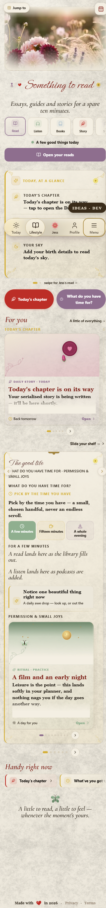
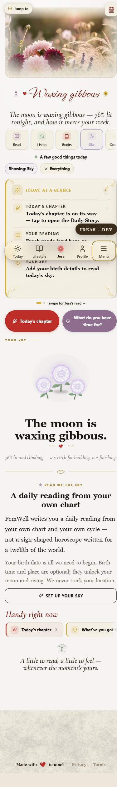

FemWell · Lifestyle · whole-page redesign · report before build
The Lifestyle page has been built piece by piece on local context, and it now fights itself: three header moments stacked, two visual languages on one screen, and a horoscope that is a stack of “read this” with no direction. This is the whole-page synthesis and the design to fix it as ONE thing — reported before a line is built.
Captured live at 390px on the authed test account (left: /Lifestyle as shipped · right: the demo route with Sky focused). Read them top to bottom.


Honest state notes. The test account has no cycle anchor and no birth chart, so both captures show the honest empty/onboarding states (that's §16.2 working, not a defect). Halli's account renders the full horoscope. The demo captures are on /LifestyleBespokeDemo; live /Lifestyle still shows the six original chips and the cream language everywhere — it has not been touched by the clean work.
Principles that govern every band, so nothing is decided locally again: one header · one language (§2.7 clean/classy, migrated together) · one summary per view · the flora is present but placed once (the still, then meaning-rosettes and one framed feature card — never a second hero) · every control does something real · the page reads top to bottom as a directed sequence (§6.8.2 bands, §19 spine).
Jump-to pill + calendar icon, restyled clean (white pill, hairline, ink). Page ground = alabaster, no grain, no vignette.
The photo/video hero and the separate script-title block are removed entirely. The header is SectionHeader only: one clean still per section, ~16:10, soft radius, with the section title (Cormorant, ink) + the ONE carved heart + the flower-profile line in a quiet band beneath. Tapping a chip crossfades to that section's still + title. Until Halli's Higgsfield stills land, each section gets a rendered placeholder still — a static, print-like composition of that section's signature species from the real engine (SpeciesBloom/Bouquet, no animation) on the alabaster ground — so the slot is designed, never the video, never a fallback flora hero. Drop-in contract unchanged: when a real still arrives, the placeholder is replaced by config alone.
Five chips (Read · Listen · Books · Sky · Good life) as clean white chips with a hairline; the active chip carries an ink border + its colourway meaning-rosette. Under them the state line (phase · day, or the gentle default). On the landing the active section's ONE action button shows (clean outlined). In focus, the chip is the door and the section surface owns its own CTA — no second button.
Restyled to a white card: soft icon discs, gold eyebrows, ink rows, the dot pager, the Jess digest panel with its inner sheet. When a section is focused this row is hidden — the section carries its own summary (§19.4), so there is exactly one summary per view. Same for the two action pills (§6.7.0a plum/gold, rendered flat and clean): landing only.
Landing: the “For you” deck + the clipboard boards, migrated to clean chrome (white boards, hairline, quiet corner sprigs, gold hairline divider, 3px accent spine, one neutral shadow — no gradient wash, no texture). Focus: the section's bespoke §19 surface (Read · Listen · Books + story · Sky · Good life · Yours), all six migrated to the clean language together with the meaning-rosette per eyebrow kept.
Compact white one-line cards, hairline, accent spine 3px, every chip a real jump (kept as is functionally).
Pollinator + one Cormorant-italic line; the footer band loses its paper texture and sits on the alabaster ground with the heart signature.
Not a stack. A directed reading in eight movements, each with a job and a real action, with a slim jump strip at the top (Today · You · Tides · Year · Ask · Atelier · Yours) that scrolls to any movement — the CLAUDE.md multi-layer switcher, so she always knows where she is. Fleuron dividers mark the movements; numbered gold eyebrows carry the direction. No flower hero inside the surface — the Sky still above is the header. Full 18-element parity, each element designed for what it is:
| Movement | What it does (function) | Original elements carried (18 + glossary) |
|---|---|---|
| I · Tonight (masthead) | Where she is right now: the reading's headline, heart flourish, state line (phase · moon · sun), ONE CTA “Edit your chart”, share icon. The Jess→Astra handoff banner appears here only when she arrives from Jess. | 1 Hero · 18 Share · 16 JessAstraBanner |
| II · Today (read → act) | The editorial reading with its crimson lead-in and Astra's signature; Energy/Mood; “A sound for today” (Spotify); Notice/watch-for. Then the carry-it-with-you row — Reflect (seeded Journal composer) · Discuss (Community room) · Ask Jess — and “Mark as read” (Garden). The reading does something. | 3 Today's weather · 17 ContentActionBar |
| III · You (identity) | The chart triad as hairline columns (tap → 80–120-word reading; locked → add birth time), the goddess bench (six orbs, tap → archetype + sign, the goddess line), and the red/white moon archetype (moon glyph + name + body; honest empty state). | 2 Triad · 5 Goddess bench · 7 RedWhiteMoon |
| IV · Your tides (body) | The cycle × moon dial in the one framed feature card (corner sprigs, her phase colourway wash) + the void-of-course moon pip when live. No cycle → “add your dates” deep-links to the real logger. | 4 Cycle-moon dial · 10 SkyDiary (VoC pip) |
| V · Your year (arcs) | Annual profections (house + time-lord), the Saturn-return letter at 27–30, and the 12-cycle transit timeline (phase-tinted columns, planet dots) with the “Right now” observation; tap a column → its note. | 6 Profections + Saturn · 10 SkyDiary (timeline + right-now) |
| VI · Ask & connect (interactive) | Ask the sky — notebook-ruled input, chips, “THE SKY SAYS”, persisted history (AdviceThreads/Messages, the real function). Compatibility — name + day/month/year drum → Talk/Touch/Trust/Time bars + the reading, copy-link (?compat=), the synastry glossary tip. | 9 AskTheSky · 8 Compatibility · GlossaryTip |
| VII · The atelier (paid) | The Atelier letter — locked (attribution chip, specimen, “Unlock · £8.99/mo” → real Stripe checkout; operator panel) / unlocked (the month's letter, awaiting-sign-off banner) — and the paid shelf (Year ahead £19 · Chart atelier £29 · Choose the day £55, real one-shot checkout). Designed as a quiet, classy shelf, not a sales banner. | 14 AtelierReading · 15 PaidShelf |
| VIII · Your sky, your way (settings + honesty) | Quiet mode + Soft sky toggles (UserPreferences, Soft sky nested + disabled when Quiet is off) · the science footer with its two citations · the privacy line. The honest close. | 11 QuietMode · 12 ScienceFooter · 13 PrivacyLine |
Order rationale (§19.2): now → act → identity → body → long arcs → interactive → paid → settings/honesty. Everything she can do today sits in the first two movements; identity and body come before the year; the interactive tools sit after she's grounded; money comes late and quiet; honesty closes.
The miss, named honestly. The merge's rotation proof passed, but the rendered list was broken: loadStoryChapters() loads every active series and the surface listed them all, sorted by day number — two 30-chapter series interleave as 1,1,2,2… → “Chapter 9 of 60, Chapter 9 of 60”. The gate picked one series; the list never scoped to it. And even scoped, a 30-row strip on cream texture is a wall, not a design.
| Control | Does | Status |
|---|---|---|
| Chips (5) | focus that section; swap the still + title | LIVE |
| Jump strip (Sky) | scrollIntoView to the movement | NEW |
| Edit your chart · + add birth time · Set up your sky | open BirthDataSheet; save → setAstro | LIVE |
| Share (icon) | ShareButton → Web Share / fallbacks | LIVE |
| A sound for today | Spotify playlist (moon sign) | LIVE |
| Reflect · Discuss · Ask Jess | seeded Journal composer / Community room / assistant event | RESTORED |
| Mark as read | recordProgress → Garden | RESTORED |
| Triad column · goddess orb · timeline column | expand in place | LIVE / NEW |
| Dial “add your dates” | deep-link to the period logger | NEW |
| Ask the sky — submit / chips | functions.invoke; persists thread + messages | RESTORED |
| Compatibility — run / copy link | functions.invoke; CompatibilityReading; clipboard | RESTORED |
| Unlock the Atelier · Buy (×3) | stripeCheckout / createOneShotCheckout (simulated when env missing, logged) | RESTORED |
| Quiet mode · Soft sky | UserPreferences create/update | RESTORED |
| Publish letter (operator) | AtelierLetters.update | RESTORED |
| Landing: glance rows · action pills · For-you · boards · Handy | existing jumps/openers, unchanged | LIVE (re-audited on build) |
Full-page screenshots at 360/390/430 on the authed pipeline (test account = empty/onboarding states; a sample chart injected temporarily for the full horoscope, then reverted); real taps on every control in the table above; the parity checklist 18/18 old-vs-new; a P0/P1/P2 catalogue. Then the complete page is shown as the single exemplar before anything rolls to live.